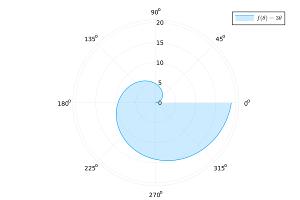
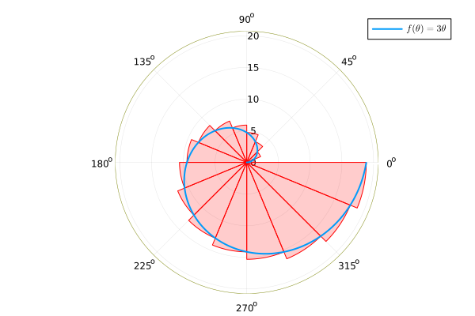

15 2025-04-10
Examen de Análisis II
Ejercicio 15.1 La función \(f(\theta) = 3\theta\) describe una espiral en coordenadas polares como la de la siguiente figura.

Calcular el area que barre la espiral en el intervalo \(\theta \in [0, 2\pi]\) usando sumas superiores de Riemann.
Tomemos la partición del intervalo \([0,2\pi]\) en \(n\) subintervalos de igual amplitud, \(P_n = \{\theta_i=\frac{2\pi}{n}i: i = 0,1,\ldots,n\}\). La amplitud de cada subintervalo es \(\Delta \theta = \frac{2\pi}{n}\). Aproximaremos el área barrida por la espiral mediante las areas de sectores circulares correspondientes a los ángulos definidos en la partición. Como queremos usar sumas superiores de Riemann, para calcular las áreas de estos sectores circulares utilizaremos el máximo de los radios, que se alcanza en el extremo superior del intervalo al ser \(f(\theta) = 3\theta\) creciente, tal y como se aprecia en la siguiente figura.

De este modo, el área del sector circular correspondiente al intervalo \([\theta_{i-1},\theta_i]\) es
\[ A_i = \frac{1}{2}f(\theta_i)^2\Delta \theta = \frac{1}{2}(3\theta_i)^2\Delta \theta = \frac{9}{2} \left(\frac{2\pi}{n}i\right)^2 \frac{2\pi}{n} = \frac{36\pi^3}{n^3}i^2 \]
Por lo tanto, la suma superior de Riemann es
\[\begin{align*} S_n &= \sum_{i=1}^n \frac{f(\theta_i)^2}{2}\Delta \theta = \sum_{i=1}^n \frac{36\pi^3}{n^3}i^2 \\ &= \frac{36\pi^3}{n^3} \sum_{i=1}^n i^2 = \frac{36\pi^3}{n^3} \frac{n(n+1)(2n+1)}{6} \\ &= 6\pi^3 \frac{2n^2+3n+1}{n^2} \end{align*}\]
Tomando el límite cuando \(n \to \infty\) obtenemos el valor del área barrida por la espiral en el intervalo \(\theta \in [0, 2\pi]\):
\[ \lim_{n \to \infty} S_n = \lim_{n \to \infty} 6\pi^3 \frac{2n^2+3n+1}{n^2} = 6\pi^3 \lim_{n \to \infty} \frac{2n^2+3n+1}{n^2} = 6\pi^3\cdot 2 = 12\pi^3. \]
Ejercicio 15.2 El trazado de una carretera sigue aproximadamente la curva de ecuación \(y=\frac{x^{3/2}}{6}\), donde \(x\) e \(y\) están dados en km. Calcular la distancia recorrida por un vehículo que sigue esta carretera desde \(x=0\) hasta \(x=10\).
Para calcular la distancia recorrida por un vehículo que sigue la carretera, debemos calcular la longitud de arco de la curva de la función \(f(x)=\frac{x^{3/2}}{6}\) en el intervalo \([0,10]\), que viene dada por la siguiente fórmula
\[\begin{align*} \int_0^{10} \sqrt{1+f'(x)^2}\,dx &= \int_0^{10} \sqrt{1+\left(\frac{3}{2}\frac{x^{1/2}}{6}\right)^2}\,dx = \int_0^{10} \sqrt{1+\frac{x}{16}} \\ &= \int_0^{10} \frac{\sqrt{16+x}}{4}\,dx = \frac{1}{4}\left[\frac{(16+x)^{3/2}}{3/2}\right]_0^{10} \\ &= \frac{1}{6}\left((16+10)^{3/2}-16^{3/2}\right) \approx 11.4291 \mbox{km}. \end{align*}\]
Ejercicio 15.3 Calcular el volumen del solido de revolución generado al rotar la elipse de ecuación
\[ (x-2)^2 + \frac{y^2}{4} = 1 \]
alrededor del eje \(x\). Calcular también el volumen del sólido generado al rotarla alrededor del eje \(y\).
Para calcular el volumen del sólido de revolución que se obtiene al rotar la espiral alrededor del eje \(x\) primero expresamos \(y\) en función de \(x\)
\[ (x-2)^2+\frac{y^2}{4} = 1 \Leftrightarrow \frac{y^2}{4} = 1-(x-2)^2 \Leftrightarrow y = \pm 2\sqrt{1-(x-2)^2} \]
De la ecuación de la elipse resulta sencillo ver que se trata de una elipse centrada en el punto \((2,0)\) y sustituyendo \(y=0\) en la ecuación obtenemos los puntos de corte con el eje \(x\) que serán los límites de integración.
\[ (x-2)^2 + \frac{0^2}{4} = 1 \Leftrightarrow (x-2)^2 = 1 \Leftrightarrow x-2 = 1 \Leftrightarrow x=1 \mbox{ o } x=3. \]
Usando el método de los discos cilíndricos, el volumen del sólido de revolución es
\[\begin{align*} \int_1^3 \pi f(x)^2\,dx &= \int_1^3 \pi \left(2\sqrt{1-(x-2)^2}\right)^2\,dx = 4\pi \int_1^3 1-(x-2)^2\,dx \\ &= 4\pi \left[x-\frac{(x-2)^3}{3}\right]_1^3 = 4\pi \left(3-\frac{1}{3} - 1 -\frac{1}{3}\right) = \frac{16}{3}\pi \end{align*}\]
Para calcular el volumen del sólido de revolución que se obtiene al rotar la espiral alrededor del eje \(y\) primero expresamos \(x\) en función de \(y\)
\[ (x-2)^2+\frac{y^2}{4} = 1 \Leftrightarrow (x-2)^2 = 1-\frac{y^2}{4} \Leftrightarrow x = 2 \pm \sqrt{1-\frac{y^2}{4}}. \]
Así pues, la elipse queda delimitada por las curvas \(f(y) = 2+\sqrt{1-\frac{y^2}{4}}\) y \(g(y) = 2-\sqrt{1-\frac{y^2}{4}}\). Los límites de integración son los valores de \(y\) que se corresponden con \(x=2\) que es donde está centrada la elipse, es decir,
\[ 2 = 2 \pm \sqrt{1-\frac{y^2}{4}} \Leftrightarrow 0 = \pm \sqrt{1-\frac{y^2}{4}}. \Leftrightarrow 1-\frac{y^2}{4} = 0 \Leftrightarrow y^2 = 4 \Leftrightarrow y = \pm 2. \]
Usando el método de las arandelas cilíndricos, el volumen del sólido de revolución es
\[\begin{align*} \int_{-2}^2 \pi (f(y)^2 -g(y)^2)\,dy &= \pi \int_{-2}^2 \left(2+\sqrt{1-\frac{y^2}{4}}\right)^2 - \left(2-\sqrt{1-\frac{y^2}{4}}\right)^2 \,dy \\ &= \pi \int_{-2}^2 \left(4+4\sqrt{1-\frac{y^2}{4}} + 1-\frac{y^2}{4} - 4 + 4\sqrt{1-\frac{y^2}{4}} - 1+\frac{y^2}{4}\right) \,dy \\ &= \pi \int_{-2}^2 8\sqrt{1-\frac{y^2}{4}} \,dy =8\pi \int_{-2}^2 \sqrt{1-\left(\frac{y}{2}\right)^2} \,dy \tag{1} \\ &= \pi \int_{-\pi/2}^{\pi/2} 8\sqrt{1-\operatorname{sen}(\theta)^2} 2\cos(\theta)\,d\theta = 16\pi \int_{-\frac{\pi}{2}}^{\frac{\pi}{2}} \cos(\theta)^2\,d\theta \\ &= 16\pi \int_{-\frac{\pi}{2}}^{\frac{\pi}{2}} \frac{1+\cos(2\theta)}{2}\,d\theta = 16\pi \left[\frac{\theta}{2} + \frac{\sin(2\theta)}{4}\right]_{-\frac{\pi}{2}}^{\frac{\pi}{2}} \\ &= 16\pi \left[\frac{\frac{\pi}{2}}{2} + \frac{\sin(\pi)}{4} - \left(-\frac{\frac{\pi}{2}}{2} + \frac{\sin(-\pi)}{4}\right)\right] \\ &= 16\pi \left[\frac{\pi}{4} + 0 - \left(-\frac{\pi}{4} + 0\right)\right] = 8\pi^2. \end{align*}\] (1) Cambio \(y = 2\operatorname{sen}(\theta)\), \(dy = 2\cos(\theta)d\theta\).
Ejercicio 15.4 Un tanque para regar un campo parte del origen y se desplaza en linea recta con una velocidad dada por la función \(v(t) = \sqrt{t+1}\). Suponiendo que el tanque contiene \(1000\) litros de agua al inicio, y que al regar gasta \(10\) litros por segundo, plantear la integral necesaria para calcular el trabajo realizado en el desplazamiento del tanque desde el origen hasta que el tanque se queda vacío suponiendo que no hay rozamiento.
A partir de la función de velocidad \(v(t) = \sqrt{t+1}\) podemos obtener la función de posición, integrándola
\[ s(t) = s(0) + \int_0^t v(x)\,dx = \int_0^t \sqrt{x+1}\,dx = \left[\frac{2}{3}(x+1)^{3/2}\right]_0^t = \frac{2}{3}(t+1)^{3/2} - \frac{2}{3}. \]
Y también podemos obtener la aceleración derivando la función de velocidad
\[ a(t) = \frac{dv(t)}{dt} = \frac{1}{2\sqrt{t+1}}. \]
Por otro lado, como cada segundo el tanque pierde \(10\) litros, el volumen de agua que queda en el tanque en el instante \(t\) es \(V(t) = 1000 - 10t\) litros y como la densidad del agua es \(1000\) kg/m\(^3\), la masa del agua que queda en el tanque es \(m(t) = 1000 - 10t\) kg. Por lo tanto, la fuerza que hay que ejercer sobre el tanque para desplazarlo es
\[ F(t) = m(t)a(t) = (1000 - 10t)\frac{1}{2\sqrt{t+1}} \]
Para calcular el tiempo que tarda el tanque en vaciarse basta resolver la ecuación \(V(t)=1000-10t = 0\), de donde se deduce que que \(t=1000/10=100\) s y en ese tiempo habrá recorrido una distancia \(s(100) = \frac{2}{3}(100+1)^{3/2} - \frac{2}{3} \approx 676.0245\) m. Así pues, en cada instante \(t\) la distancia que le queda por recorrer al tanque es
\[ d(t) = 676.0245 - s(t) = 676.0245 - \frac{2}{3}(t+1)^{3/2} + \frac{2}{3} = 676.6916 - \frac{2}{3}(t+1)^{3/2} \]
Así que, finalmente, el trabajo necesario para desplazar el tanque hasta que quede vacío viene dado por la integral
\[ \int_0^{676.0245} \frac{1000-10t}{2\sqrt{t}} (676.6916 - \frac{2}{3}(t+1)^{3/2})\,dt. \]